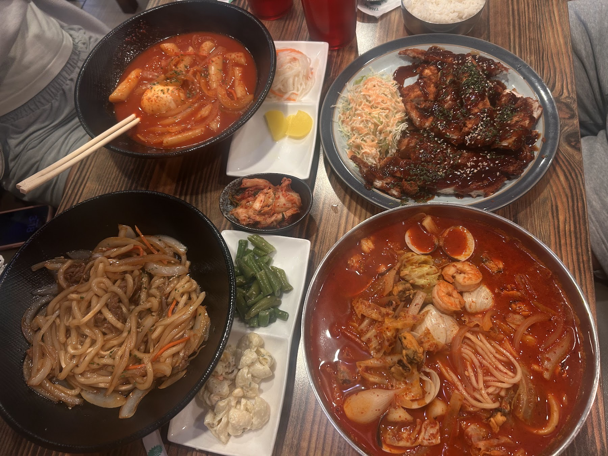
한식 · KoreanStews, rice bowls & street food
Bubbling stews and hot pots, bibimbap and stone-pot dolsot, bulgogi and galbi, teokboki and pancakes, plus a full vegetarian section.
- Army stew
- Dolsot
- Bulgogi
- Teokboki
- Vegetarian
Army stew, sizzling dolsot and bulgogi on one side of the menu, big colorful rolls on the other, and free banchan when you eat in. Bloomington’s weekly habit, just east of IU.
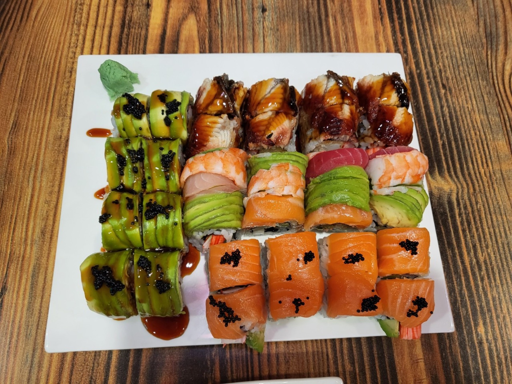
“Everything we’ve tried on the menu (Korean and sushi) has been amazing.” (Joe, Google). Mix both sides on one table.

한식 · KoreanBubbling stews and hot pots, bibimbap and stone-pot dolsot, bulgogi and galbi, teokboki and pancakes, plus a full vegetarian section.
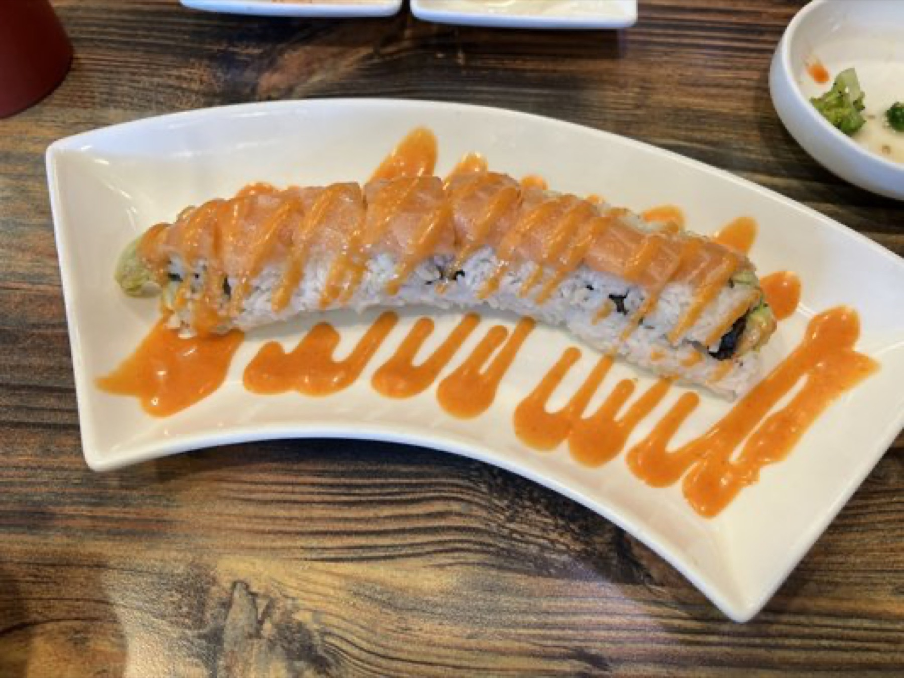
스시 · SushiSpecialty rolls dressed in avocado, eel and salmon, the spicy tuna regulars swear by, and bento boxes that pack a full lunch into one tray.
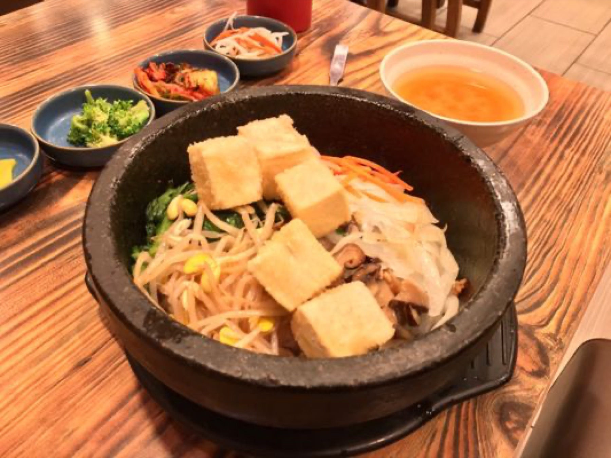
Rice, vegetables and your pick of topping in a sizzling stone bowl. “The crispy rice soooo goood.” (Andrea L.)
Kimchi, ham, sausage, cheese and pork in a spicy broth. The one Ron Ludke tells everyone to order.
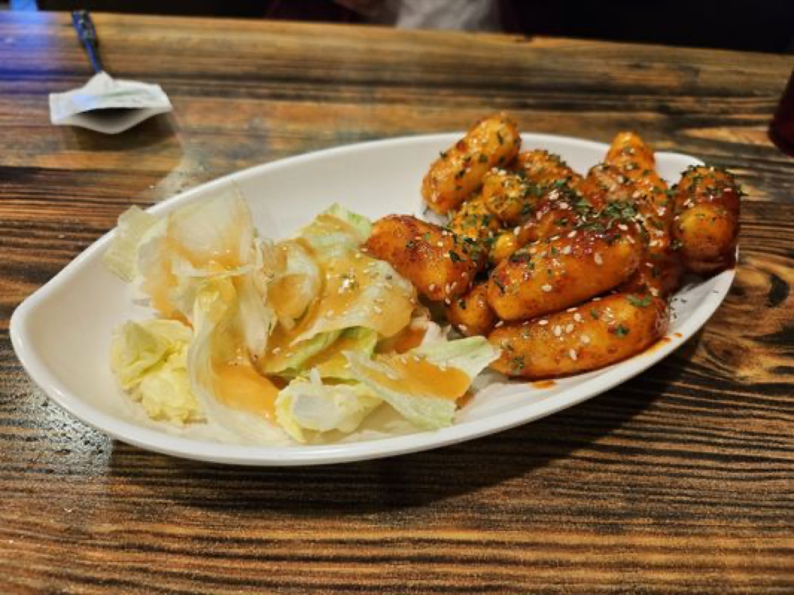
Fried rice cakes in a sticky, Korean-style glaze.
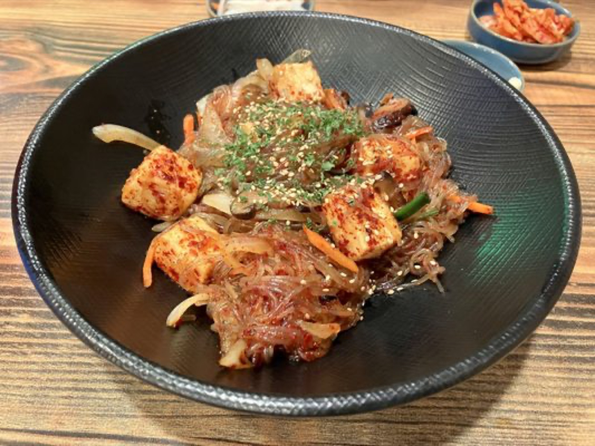
Glass noodles stir-fried with tofu and vegetables, sweet or spicy.
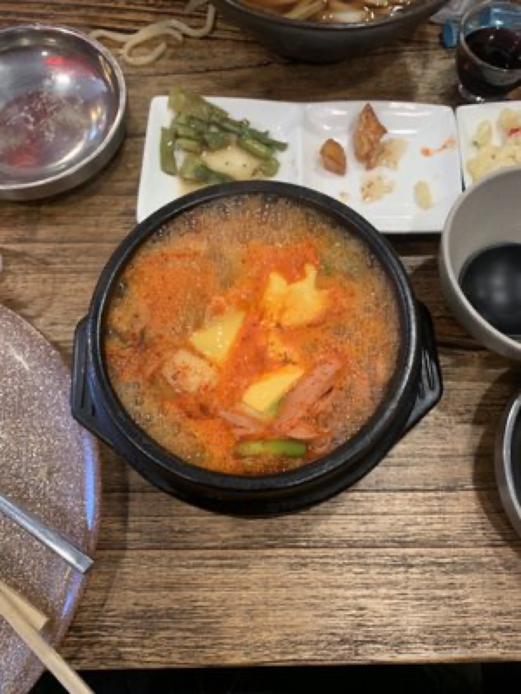
Spicy kimchi stew with pork and vegetables, still bubbling when it lands.
Avocado, eel and salmon rolls, plus the King Kani and the spicy tuna regulars rave about.
Sit down and a spread of small side dishes lands on the table before your food: house-made kimchi, sweet potatoes, bean sprouts, broccoli, pickled radish, creamy macaroni. Wash it down with a Korean soft drink.
“I especially liked the sweet potato in sweet sauce and the house made kimchi.”Dana S., Yelp
There’s a juice bar up front, too. Grab a fresh juice or smoothie with lunch, or on its own.
Booths, wood tables, and K-pop videos and K-dramas on the TVs. “The interior isn’t bright, which is perfect and sets the tone of a nice dinner.” (Ty W., Yelp)
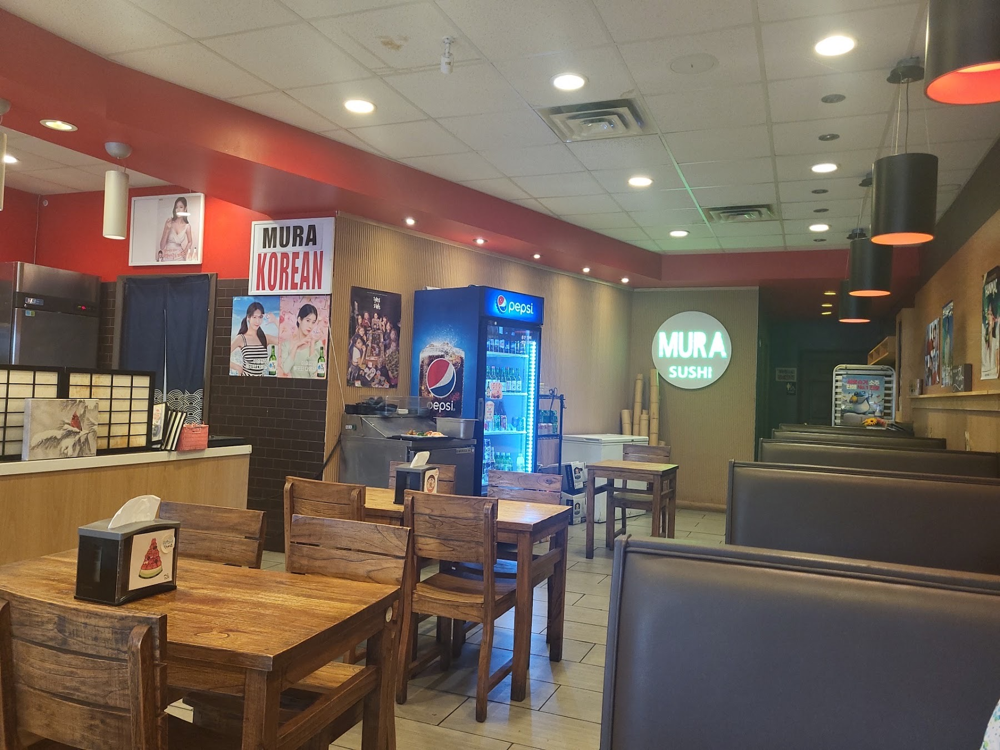
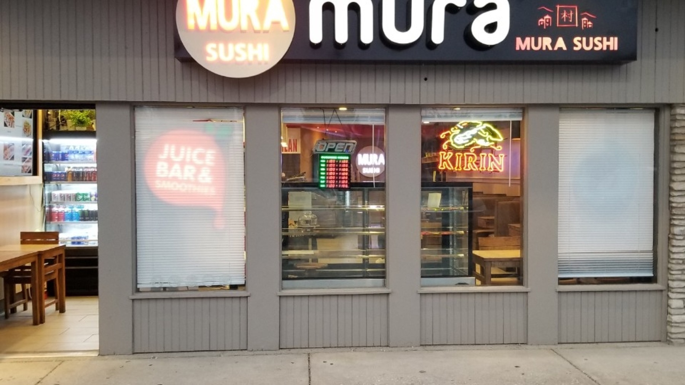
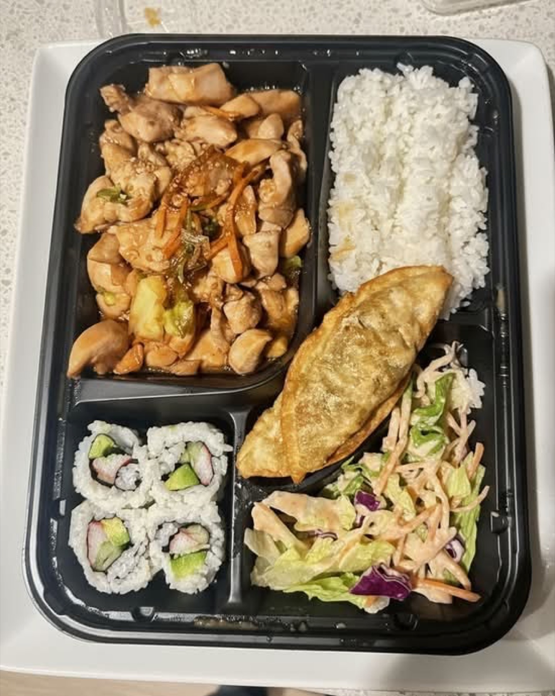
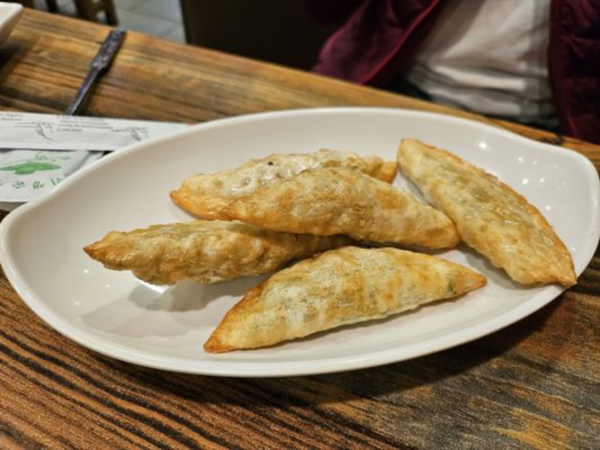
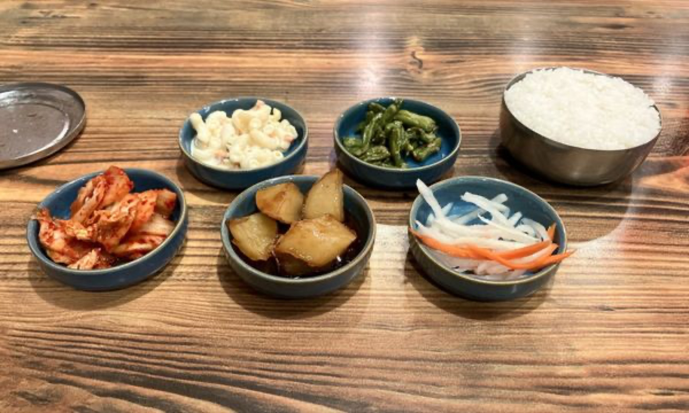
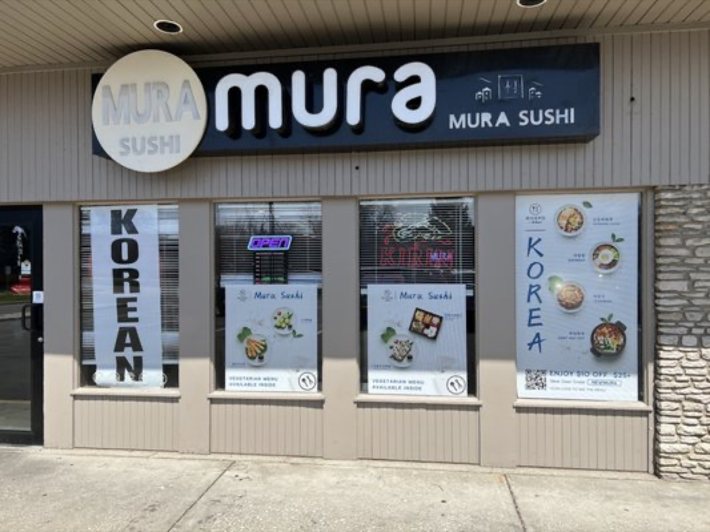
“This is my favorite restaurant in Bloomington. We try to go at least once a week. Everything we’ve tried on the menu (Korean and sushi) has been amazing. The service is wonderful and the food is consistent.”
“I’ve had a lot of Chinese and Japanese food through the years but this was my first time having Korean. It was plentiful and delicious! We had the Bibimbap and the bulgogi plus hoteok for dessert. Everything was delicious and the service was perfect.”
“I absolutely LOVE Mura Sushi. I would go here often as a student at IU. The portions are definitely worth the amount that you spend and the staff is extremely friendly and hard-working.”
“This place has the best spicy tuna roll I have ever had. I eat sushi pretty often and I’ve been to lots of sushi places across the country and this is still the best I’ve had.”
“We love this restaurant. The food is so good. I think it’s one of the best restaurants in the city. We ate it all before I could get any pictures. The owner is so nice and sweet.”
“This was one of the best meals I’ve ever had. The yaki soba with fried tofu was amazing; the tofu was the best tofu I’ve ever eaten. Our servers were attentive and wonderful too!”
“We went here for a very late dinner (10.15 pm). This place is a gem! The food was amazing, and they had so many vegetarian options!”
“Food came with a generous portion (I got beef dolsot!) and my bf got beef bulgogi. He totally smashed the whole thing.”
“Everything is so flavorful and delicious. Eating inside has its perk, you get a complimentary spread of a few little goodies to nibble while your food cooks. Definitely recommend the Army Stew.”
“This is a gem! The sushi rolls were delicious! Had a King Kani roll and my SO had the spicy salmon and a spicy tuna roll. The place is kept clean and tidy.”
“Best sushi we’ve had in a long while! The staff was also super helpful, polite, and quick.”
Yes. Korean dishes and sushi come out of the same kitchen, so you can mix them on one table or one takeout order.
Banchan are the little side dishes that come out before your food: house-made kimchi, sweet potatoes, bean sprouts, pickled radish and more. When you eat in, they’re on the house.
Regulars point first-timers to the army stew, bibimbap or dolsot, bulgogi, and hoteok for dessert. Add a spicy tuna or King Kani roll if you’re splitting it.
Yes. Our menu has a whole vegetarian section: tofu japchae, yaki soba and yaki udon with fried tofu, tofu bibimbap and dolsot, vegetable soondubu and more. Tell your server and we’ll help you skip fish sauce.
Yes. Call (812) 369-4448 and your order will be ready when you get here.
Tuesday to Sunday, 11:30 AM to 11 PM. We’re closed on Mondays. Holiday hours can change, so call ahead on holidays.
1793 E 10th St, Bloomington, east of the IU campus. Look for the black “mura” sign and the juice bar window.
East of the IU campus, in the strip with the stone front. Look for the black “mura” sign.
| Monday | Closed |
| Tuesday | 11:30 AM – 11 PM |
| Wednesday | 11:30 AM – 11 PM |
| Thursday | 11:30 AM – 11 PM |
| Friday | 11:30 AM – 11 PM |
| Saturday | 11:30 AM – 11 PM |
| Sunday | 11:30 AM – 11 PM |
Holiday hours can change. Give us a call to check.